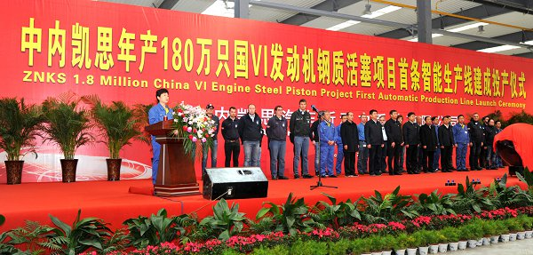
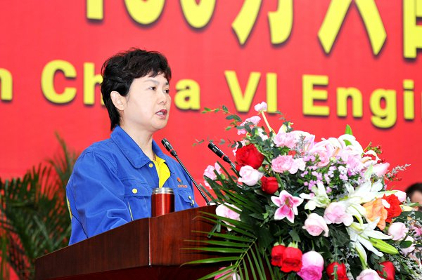
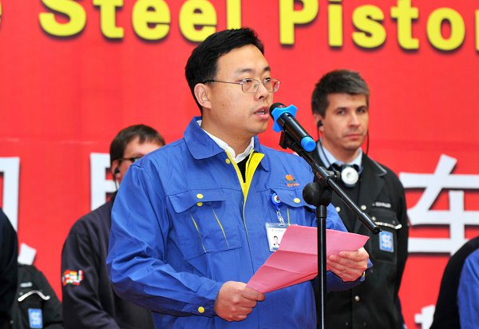
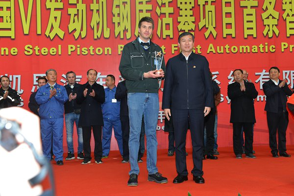
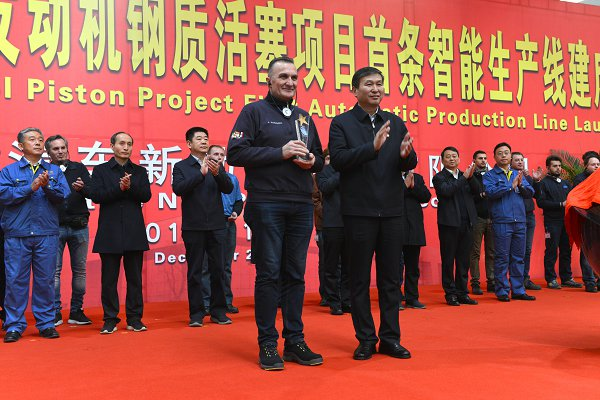
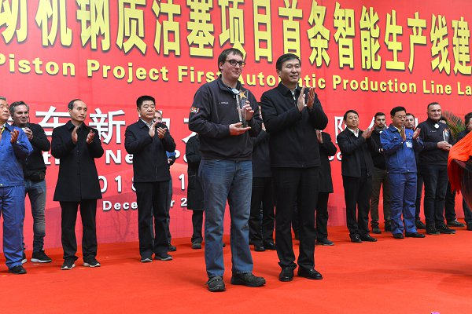
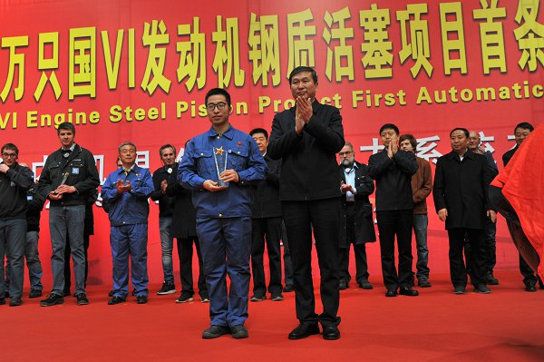

12月13日，在中内凯思汽车新动力系统有限公司宽大的生产车间内，隆重举行年产180万只国六发动机钢质活塞项目首条智能生产线建成投产仪式。焦作市和孟州市领导出席中内凯思智能线投产仪式。
仪式由集团总裁张冬梅主持。

张总裁指出，中内凯思项目既是中原内配集团和德国莱茵金属集团的战略合作项目，又是焦作市十大重点建设项目之一。项目从孕育到投产，集团董事长薛德龙数次跨国奔波，多次和德方一道走访市场，亲力亲为，不辞辛苦，带领团队用真诚感动德方，以品牌吸引德方合作。
焦作市委王书记亲赴德国出席项目签约仪式并鉴签，刘涛书记亲自挂率、服务项目，孟州市的卢书记、吕市长现场办公，解决难题，各职能部门主动对接，靠前服务，为项目开辟绿色通道。
中德双方团队发挥各自优势，推动市场开发和工厂建设同步推进，短短一年多，就实现了厂区建成,设备到位，订单落地。
中内凯思能够取得今天的成绩，是各级党委、政府共同关心的结果，是项目双方相互尊重、全力以赴的结果，是广大建设者日夜奋战、无私奉献的结果，实现了“政府支持的力度前所未有，国际合作的深度前所未有，联合开发的广度前所未有，项目建设的速度前所未有”。
中内凯思总经理薛亚辉详细介绍了项目建设情况。

薛总经理从项目的孕育讲到双方正式签约，从工程建设中各方给予的巨大支持讲到中德团队的种种努力，从中德团队的文化融合、团结一心讲到市场开发，从生产线的建成投产讲到企业的发展优势和市场前景。
薛总经理强调指出，项目之所以能够快速推进，得益于集团董事长薛德龙高瞻远瞩的战略思维推动，得益于项目团队不畏强敌敢于亮剑的精神力量推动，得益于“亲”“清”和谐的政企关系的推动和中西文化碰撞交融相互影响的力量推动。
薛总经理表示，我们有信心，更有决心，依托中欧产业园这个大平台，把中内凯思建成互利共赢、中欧乃至全球合作的典范！为焦作、孟州工业经济发展不断做出新的、更大的贡献！
焦作市委书记王小平向项目建设代表颁发“建设功勋奖”。




总裁张冬梅宣布中内凯思首条智能线正式投产，中原内配监事会主席薛建军和中德双方代表共同为生产线投产剪彩。
中德双方代表都做了发言。
焦作市、孟州市各职能部门的领导，电力公司和有关金融机构的领导，焦作市各县市区领导、20家智能制造企业的负责人，中原内配集团的中高层领导和300多名员工代表共同见证了这一历史时刻。
仪式现场通过小鱼易连向集团总部和全球子公司直播。
随后，与会者参观了中内凯思的智能生产线。